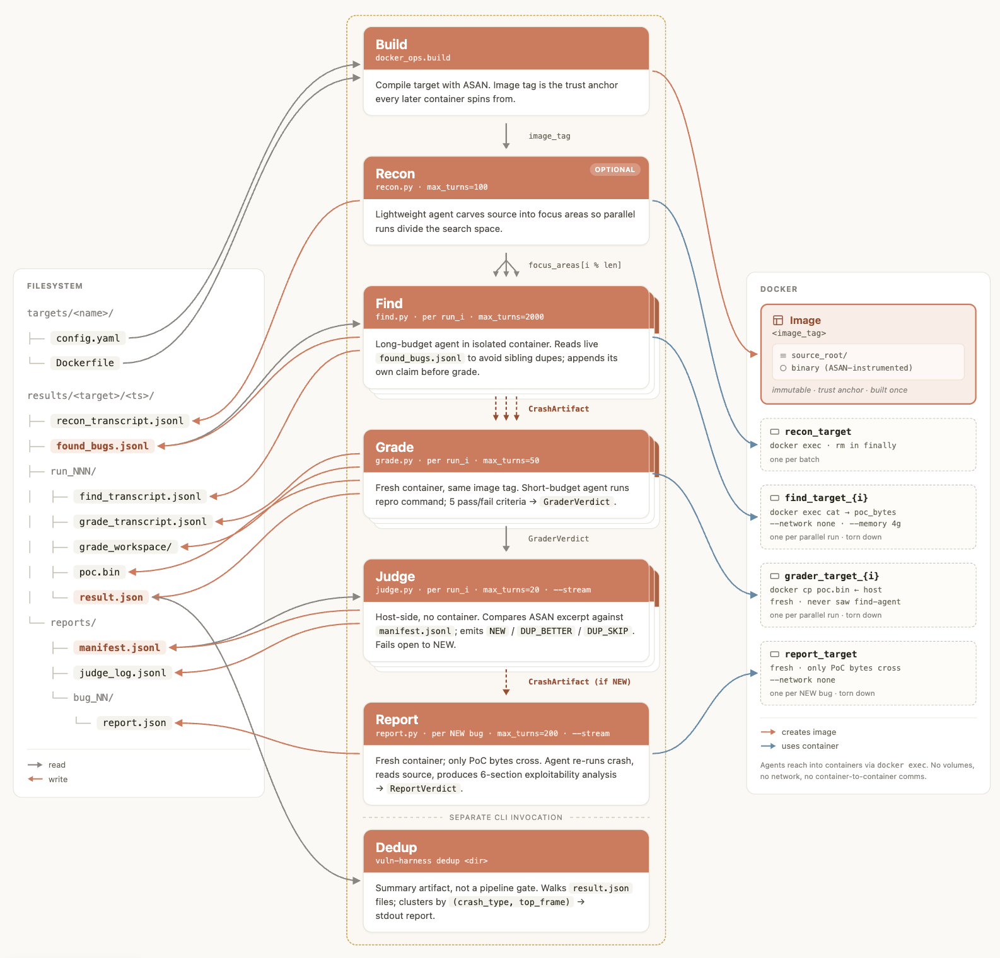

skillsinteractive
Claude Code skills：先把问题定义住
/quickstart、/threat-model、/vuln-scan、/triage、/patch、/customize 这一层只负责读写文件和形成判断，不需要先把 target 拉进自治执行环境。
- 适合快速上手和 scoped scan
- 适合先做 triage 和 candidate patch
这是一个面向 autonomous vulnerability discovery and remediation 的参考实现：把 threat model、静态扫描、验证、报告和 patch 串成可迁移的 Claude 流水线；它不是产品，也不接受新的贡献。
互动 skills 只读写文件；真正的自治流水线必须经 bin/vp-sandboxed 启动，在 gVisor 容器里跑，并且把网络出口限制到 Claude API。不要把 credentials、.env、云账号路径挂进 agent 可达的文件系统。

/quickstart、/threat-model、/vuln-scan、/triage、/patch、/customize 这一层只负责读写文件和形成判断，不需要先把 target 拉进自治执行环境。
这层是针对 C/C++ memory vulnerabilities 的参考流水线，默认配套 Docker + ASAN。它的价值在于把多个 agent 的职责切开，并用独立 grader 做复验。
Anthropic 自己明确给了托管选项 Claude Security；这个仓库提供的是一套可自建、可定制的参考路径，不是产品化交付。
用 interactive skills 先定义威胁模型，再做 scoped scan，最后 triage 结果并生成 candidate patch。目标是看懂整条闭环，而不是追求自动化最大化。
产物：THREAT_MODEL.md、VULN-FINDINGS、TRIAGE、PATCHES进入自治层，跑 recon → find → verify → report 的完整循环。第一轮建议小波次启动，先看 token burn、报告产出和验证节奏，再决定是否放大。
产物：results/<target>/<timestamp>/、reports/bug_NN/把 Step 1 产物喂给 /customize，改的是 detector、PoC 形态、build/run 命令、grader 语义，而不是硬搬 C/C++ 的假设到其他语言。
关键：signals、PoC、build/run 三个问题先回答清楚当你的 harness 已经针对目标跑通后，再做多波次并行扫描、跨批次 triage 和 patch 优先级排序。这是 outer loop，不是 Day 1 的起点。
建议：先验证可复验性，再追求覆盖率把目标编译进 Docker / ASAN 镜像，冻结依赖和构建结果，保证后续 agent 看到的是同一份代码、同一个运行环境。
可选步骤。先分割攻击面、规划 focus areas，让并行 find agents 不要扎堆同一个 parser 或同一条输入路径。
多 agent 并行造输入、跑崩溃，直到一个输入能 3/3 复现。输出的重点是 crash witness，而不是长篇推理。
在 fresh container 里复跑 PoC。只有 PoC bytes 跨过来，验证 agent 不继承 find agent 的上下文，减少污染。
把新 crash 与已有 bug 做签名比较，区分新问题、已知问题的更好样本，或直接重复项，防止结果膨胀。
生成 exploitability analysis，写清可达性、影响面、可能的升级路径，以及为什么这个 crash 值得被当作真实漏洞看待。
提出修复，并重新跑 build / reproduce / test / re-attack。修复的标准不是“这次没崩”，而是回归验证都过了。
/quickstart、/threat-model、/vuln-scan、/triage 这一组属于低风险层。只要你在 Claude Code 里逐步审批每个动作，它们不需要先上 gVisor。
# 低风险层：先把问题说清楚
claude
> /quickstart
> /threat-model bootstrap targets/canary
> /vuln-scan targets/canary
> /triage targets/canary/VULN-FINDINGS.json一旦 agent 要执行 target code，就不能再把它当普通脚本。需要先运行 sandbox setup，再用带 gVisor 和 egress allowlist 的入口去跑。
# 一次性准备
python3 -m venv .venv && .venv/bin/pip install -e .
./scripts/setup_sandbox.sh
export ANTHROPIC_API_KEY=***
# 自治执行
bin/vp-sandboxed run drlibs --model <model-id> --runs 3 --parallel --stream --auto-focus
bin/vp-sandboxed patch results/drlibs/<timestamp>/ --model <model-id>README 和 security docs 的意思都很明确：安全要靠代码约束，不靠“模型自己会克制”。普通 Docker、privileged、host network 都不应当替代真正的隔离。
通常会产出 THREAT_MODEL.md、VULN-FINDINGS.{json,md}、TRIAGE.{json,md} 和 PATCHES/。这也是为什么前半段一定要尽量稳：它们不是一次性笔记，而是后续自治运行的输入。
Source: https://github.com/anthropics/defending-code-reference-harness · Swiss red-black rebuild · 2026-06-04 07:34:16